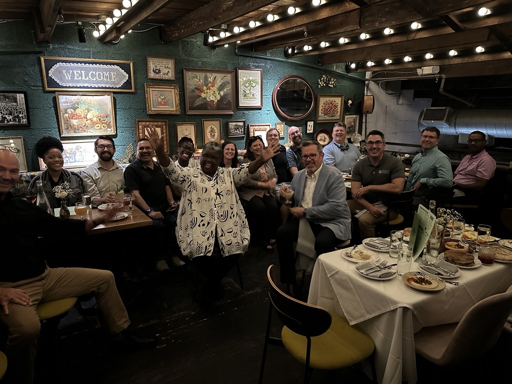
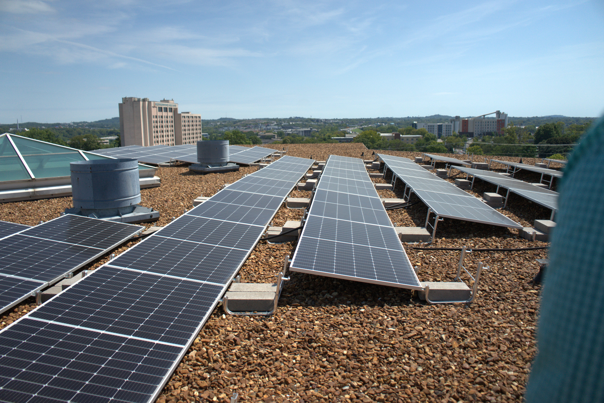
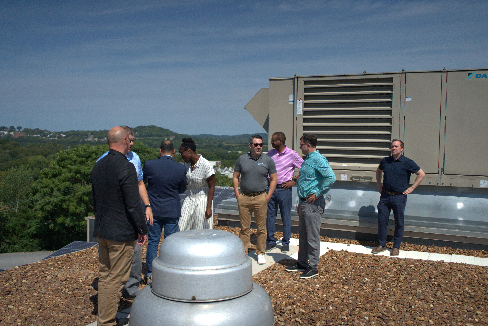
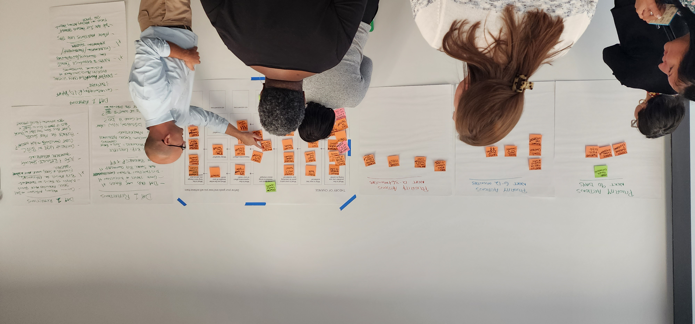

Measurable Impact.
Community-Rooted Progress.
Discover how Appalachian Community Capital connects local knowledge with regional scale—deploying catalytic capital, advancing rural clean energy, sharing member intelligence, and elevating the voices of Appalachian entrepreneurs.
Verified Regional Impact
We track quantitative and qualitative outcomes across our 46 member CDFIs, 13 states, and 423 Appalachian counties to ensure capital reaches underserved communities with maximum leverage.
Member Survey Findings • 2025
Direct insights from our 46 member institutions reveal growing balance sheets, urgent capital appetite, and strong institutional governance across the Appalachian footprint.
Indicate direct capital need between $1M and $3M to meet local borrowing demand.
Extend business loans over $100K, while 70% also provide accessible microloans below $50K.
Extend commercial real estate loans to revitalize downtown historic districts and industrial parks.
Report active qualified commercial loan pipelines exceeding $10,000,000.
Maintain a regularly reviewed financial sustainability plan with diversified revenue streams.
Have active executive succession plans and sufficient technical staffing in place.
ACC Vision 2030: Mobilizing $250 Million
By 2030, ACC plans to mobilize $250M in catalytic capital to expand economic opportunity, grow resilient local businesses, create family-sustaining jobs, and build lasting community wealth across Appalachia.
$7M Strategic Investment Ask
To achieve this vision, ACC is securing $7M in targeted catalytic investments:
- $2M Unrestricted operating capital to reinforce leadership, data infrastructure, and lending technology.
- $5M Equity balance sheet capital, leveraging additional debt capital by a factor of nine (9:1) for regional members.
Stories of Real People & Places
Behind every metric is a mountain town, a family-owned business, an energetic community solar array, or a historic building brought back to life.

Disaster RecoveryRebuilding Main Street After Hurricane Helene
When catastrophic flooding devastated Western North Carolina, ACC coordinated with Mountain BizWorks to deploy $55M in emergency recovery grants and loans, protecting 2,100+ businesses and preserving 8,000+ local livelihoods.
Read Community Story →
Clean Energy FinanceSolar Power for Rural Schools and Fire Departments
Through the Green Bank for Rural America, ACC approved $67M in low-cost financing for member CDFIs to install distributed solar and battery storage on civic facilities, slashing utility bills and creating resilient clean energy jobs.
Explore Clean Energy Projects →From Vacant Factories to Vibrant Innovation Centers
Opportunity Appalachia has raised $165M across 86 community projects, turning abandoned brick warehouses into thriving incubators, affordable artist housing, and agricultural food hubs that project over 4,700 quality jobs.
Discover Opportunity Appalachia →
Inclusive CapitalWomen and Leaders of Color Expanding Rural Access
21 of ACC's 46 member CDFIs are led by women and people of color. By anchoring decision-making locally and intentionally mentoring diverse loan officers, ACC ensures capital reaches Black, Brown, Indigenous, and women entrepreneurs.
Meet Our Leadership →Latest News & Updates
Official announcements, funding milestones, organizational updates, and media coverage from Appalachian Community Capital.
ACC Launches $275M Resilient Capital Campaign to Scale Regional Financing
Historic multi-year capital campaign designed to attract major institutional, philanthropic, and bank co-investors into the 13-state Appalachian CDFI ecosystem.
Read Full Announcement →Green Bank for Rural America Approves $67M in Financing for Community Lenders
Capital allocations prioritize small businesses, community facilities, and civic infrastructure recovering from severe weather events and advancing clean energy transitions.
Read Press Release →$40M Community Investment Notes Offering Expands with Trillium & Brown Advisory
Accessible fixed-income notes enable mission-aligned foundations and accredited wealth managers to invest in Appalachia with flexible terms and catalytic impact.
Explore Note Offering →$2.3M in Disaster Recovery Grants Deployed from Truist, Goldman Sachs & Ford
Re-grants disburse directly to front-line member CDFIs in flood-impacted mountain valleys to provide emergency principal forbearance and technical assistance.
View Relief Details →Rural Resilience Forum Convenes 40 Experts on 18-Month Economic Roadmap
Top regional economists, CDFI executives, and Appalachian leaders establish concrete milestones for supply chain reshoring, workforce housing, and clean industry growth.
Read Forum Summary →$9M+ in Direct Loans Approved to 9 Member CDFIs Across 5 States
ACC credit committee approves new liquidity lines enabling members to underwrite high-growth small business loans in coal-impacted counties.
See Member Network →Upcoming Events & Convenings
Connect with community lenders, impact investors, federal policymakers, and economic development practitioners across our scheduled workshops and annual summits.
2026 Appalachian Capital & Community Summit
The premier regional gathering bringing together 46 CDFI leaders, philanthropic program officers, and bank partners to set 2027 regional investment priorities.
Register for Summit →Rural Clean Energy Financing & Green Bank Masterclass
Led by Pam Porter and clean energy finance specialists. Learn how CDFIs can structure IRA direct pay, solar microloans, and commercial building retrofits.
Reserve Webinar Spot →Community Investment Training (CIT) 2027 Cohort Kickoff
Hands-on financial structuring and pre-development curriculum for 56 community leaders representing 5 Appalachian states.
Apply for Cohort →ACC Data Analytics Hub: Geospatial Pipeline Intelligence
Specialized training for member loan officers to leverage the 4,800 mapped business profiles and warm lead analytics inside the ACC Hub.
Join Data Workshop →Reports & Resources
Access our annual impact evaluations, strategic publications, audited financial statements, and CDFI certification documentation.
2025 Annual Impact Report: Resilience & Momentum
A comprehensive accounting of ACC’s progress across all 46 member CDFIs, detailing the $55M Western NC Small Business Initiative, the launch of the Green Bank for Rural America, Opportunity Appalachia milestones, and our 2030 vision.

CDFI Blended Finance Structuring Guide
Best practices for layering philanthropic guarantee capital with Senior debt and New Markets Tax Credits in rural markets.
Download PDF →Rural Resilience Economic Playbook
Guidance and underwriting frameworks for small lenders preparing commercial borrowers for climate and economic shocks.
Download Playbook →Audited Financial Statements & 990
Independent annual audited financial statements verifying balance sheet stability, liquidity ratios, and regulatory compliance.
View Financial Documents →CDFI Certification & Policies
Official U.S. Treasury CDFI Fund certification records, Non-Discrimination Policy, and fair lending compliance documentation.
Review Policies →Invest & Support ACC
Whether through our fixed-income Community Investment Notes or tax-deductible philanthropic contributions, your capital accelerates local institutions building permanent regional wealth.
Community Investment Notes
Accessible, mission-aligned fixed-income investment opportunity for accredited individuals, foundations, and corporate treasury managers. Capital is lent directly into high-impact Appalachian CDFIs.
Philanthropic Contributions
Tax-deductible philanthropic support directly funds ACC's high-leverage organizational pillars: diverse leadership training, data analytics infrastructure, disaster gap financing, and balance sheet equity.